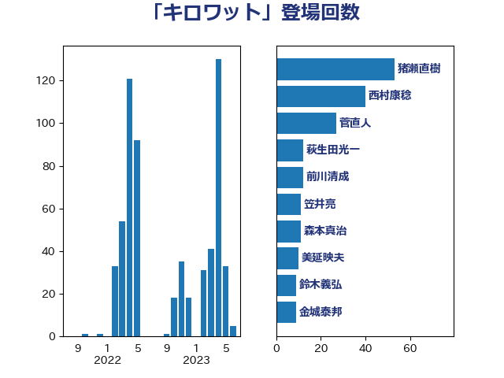

単語「キロワット」

| 猪瀬直樹 | 日本維新の会 | 53 回 |
| 西村康稔 | 自由民主党 | 40 回 |
| 菅直人 | 立憲民主党 | 27 回 |
| 萩生田光一 | 自由民主党 | 12 回 |
| 前川清成 | 日本維新の会 | 12 回 |
| 笠井亮 | 日本共産党 | 11 回 |
| 森本真治 | 立憲民主党 | 11 回 |
| 美延映夫 | 日本維新の会 | 10 回 |
| 鈴木義弘 | 国民民主党 | 9 回 |
| 金城泰邦 | 公明党 | 9 回 |
| 山崎誠 | 立憲民主党 | 9 回 |
| 石井章 | 日本維新の会 | 7 回 |
| 中谷真一 | 自由民主党 | 7 回 |
| 福島伸享 | 無所属 | 6 回 |
| 務台俊介 | 自由民主党 | 6 回 |
| 神津たけし | 立憲民主党 | 5 回 |
| 田嶋要 | 立憲民主党 | 5 回 |
| 平山佐知子 | 無所属 | 5 回 |
| 高橋千鶴子 | 日本共産党 | 4 回 |
| 近藤和也 | 立憲民主党 | 4 回 |
| 空本誠喜 | 日本維新の会 | 4 回 |
| 櫛渕万里 | れいわ新選組 | 4 回 |
| 山岡達丸 | 立憲民主党 | 4 回 |
| 野中厚 | 自由民主党 | 3 回 |
| 米山隆一 | 立憲民主党 | 3 回 |
| 礒崎哲史 | 国民民主党 | 3 回 |
| 清水貴之 | 日本維新の会 | 3 回 |
| 室井邦彦 | 日本維新の会 | 3 回 |
| 勝俣孝明 | 自由民主党 | 3 回 |
| 里見隆治 | 公明党 | 2 回 |
| 辻元清美 | 立憲民主党 | 2 回 |
| 輿水恵一 | 公明党 | 2 回 |
| 緑川貴士 | 立憲民主党 | 2 回 |
| 細田健一 | 自由民主党 | 2 回 |
| 竹詰仁 | 国民民主党 | 2 回 |
| 福田昭夫 | 立憲民主党 | 2 回 |
| 田村貴昭 | 日本共産党 | 2 回 |
| 岸田文雄 | 自由民主党 | 2 回 |
| 岩渕友 | 日本共産党 | 2 回 |
| 小野泰輔 | 日本維新の会 | 2 回 |
| 大島敦 | 立憲民主党 | 2 回 |
| 丸川珠代 | 自由民主党 | 2 回 |
| 中川貴元 | 自由民主党 | 2 回 |
| 下野六太 | 公明党 | 2 回 |
| 上田清司 | 国民民主党 | 2 回 |
| 青木愛 | 立憲民主党 | 1 回 |
| 青島健太 | 日本維新の会 | 1 回 |
| 長谷川岳 | 自由民主党 | 1 回 |
| 鈴木敦 | 国民民主党 | 1 回 |
| 赤木正幸 | 日本維新の会 | 1 回 |
| 荒井優 | 立憲民主党 | 1 回 |
| 船橋利実 | 自由民主党 | 1 回 |
| 稲津久 | 公明党 | 1 回 |
| 福重隆浩 | 公明党 | 1 回 |
| 福岡資麿 | 自由民主党 | 1 回 |
| 石川博崇 | 公明党 | 1 回 |
| 田島麻衣子 | 立憲民主党 | 1 回 |
| 河西宏一 | 公明党 | 1 回 |
| 横山信一 | 公明党 | 1 回 |
| 梅谷守 | 立憲民主党 | 1 回 |
| 末次精一 | 立憲民主党 | 1 回 |
| 斉藤鉄夫 | 公明党 | 1 回 |
| 平林晃 | 公明党 | 1 回 |
| 市村浩一郎 | 日本維新の会 | 1 回 |
| 山添拓 | 日本共産党 | 1 回 |
| 山口晋 | 自由民主党 | 1 回 |
| 山口壯 | 自由民主党 | 1 回 |
| 小林一大 | 自由民主党 | 1 回 |
| 太田房江 | 自由民主党 | 1 回 |
| 大野泰正 | 自由民主党 | 1 回 |
| 吉川ゆうみ | 自由民主党 | 1 回 |
| 北村経夫 | 自由民主党 | 1 回 |
| 中野洋昌 | 公明党 | 1 回 |
| 世耕弘成 | 自由民主党 | 1 回 |